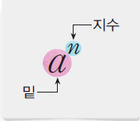
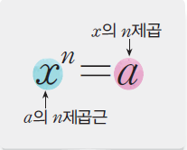
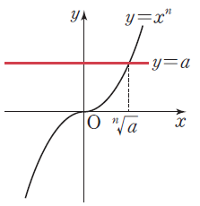
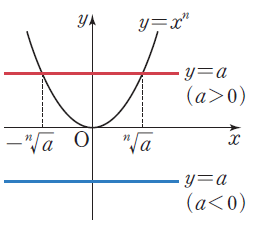
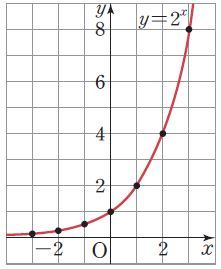
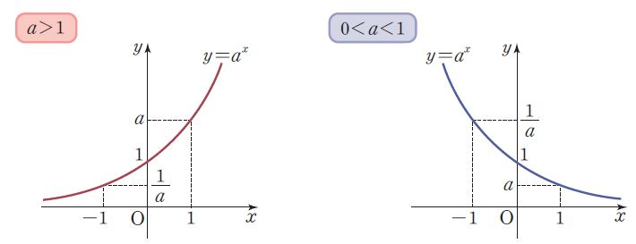
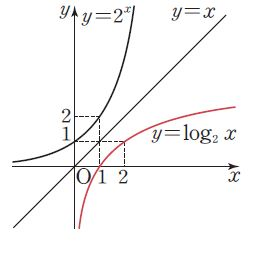
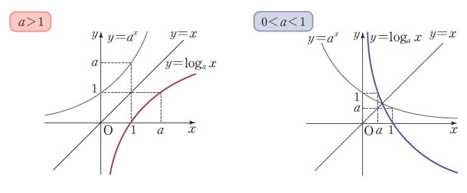

핵심개념
거듭제곱과 거듭제곱근
거듭제곱의 뜻
- a가 실수이고, a이 양의 정수일 때 a를 n번 곱한 것을 a의n제곱이라 하고, 이것을 기호로 \(a^n\)으로 나타낸다. 이때 \(a, a^2, a^3, a^4, ...\)을 통틀어 a의 거듭제곱이라 한다.

거듭제곱근의 뜻
- 제곱하여 실수 \(a\)가 되는 수, 즉 \(x^2 = a\)를 만족시키는 수 \(x\)를 \(a\)의 제곱근이라고 하고, 세제곱하여 실수 \(a\)가 되는 수, 즉 \(x^3 = a\)를 만족시키는 수 \(x\)를 \(a\)의 세제곱근이라고 한다. 또, \(a\)의 제곱근, \(a\)의 세제곱근, \(a\)의 네제곱근, \(...\)을 통틀어 \(a\)의 거듭제곱근이라고 한다.

거듭제곱근와 그래프
실수 \(a\) \(n\)제곱근 중 실수인 것은 방정식 \(x^n =a\)의 실근이므로 함수 \(y= x^n\)의 그래프와 직선 \(y=a\)의 교점의 \(x\)좌표와 같다.
- n이 홀수 일때
\(x\)가 임의의 실수일 때, \((-x^n) = -x^n\)이므로 함수 \(y=x^n\)의 그래프는 아래 그림과 같이 원점에 대하여 대칭이다. 이때 이 그래프와 직선 \(y=a\)의 교점은 실수 n의 값에 관계없이 항상 1개이다. 따라서 \(a\)의 \(n\)제곱근 중 실수인 것은 오직 하나뿐이고, 이것을 기호로 \[ \sqrt[n]{a} \] 와 같이 나타낸다.

- n이 짝수 일때 \(x\)가 임의의 실수일 때, \(x^n>0\)이고, \((-x)^n=x^n\)이므로 함수 \(y=x^n\)의 그래프는 오른쪽 그림과 같이 \(y\)축에 대하여 대칭이다. 이때 이 그래프와 직선 \(y=a\)의 교점의 개수는 실수 \(a\)의 값에 따라 다음과 같이 달라진다.
\(a>0\)면 교점은 2개이고, 그 두 교점의 \(x\)좌표는 각각 양수와 음수이다. 따라서 \(a\)의 \(n\)제곱근 중 실수인 것은 양수인 것과 음수인 것이 \(1\)개씩 있으며, 이것을 각각 기호로 \[ \sqrt[n]{a}, -\sqrt[n]{a} \] 로 나타낸다.
\(a=0\)이면 교점은 \(0\)개이고, 그 교점의 \(x\)좌표는 \(0\)이다. 따라서 \(a\)의 \(n\)제곱근 중 실수인 것은 \(0\) 하나뿐이다. 즉, \(\sqrt[n]{a}=0\)이다.
\(a<0\)이면 교점이 없으므로 \(a\)의 \(n\)제곱근 중 실수인 것은 없다.

지수의 확장
0 또는 음의 정수
\(a \neq 0\)이고, \(n\)이 양의 정수일 때 \(a^0 =1, a^{-n}=1/a^n\)
유리수인 지수
\(a > 0\)이고, \(m,n(n\geq2)\)이 정수일 때 \[ a^{\frac{m}{n}} = \sqrt[n]{a^m} = \left( \sqrt[n]{a} \right)^m \] \[ a^{\frac{1}{n}} = \sqrt[n]a \]
무리수인 지수
\[ \left( 2^{\sqrt{2}} \right)^\sqrt{2} = 2^{\sqrt{2} \times \sqrt{2}} = 2 ^ 2 =4 \]
로그
로그의 뜻과 진수
\(2^x=1, 2^x=4, 2^x=8, ...\)을 만족시키는 \(x\)의 값은 각각 1,2,3으로 하나씩만 존재함을 알 수 있다. 하지만 \(2^x=6\)을 만족시키는 \(x\)의 값은 쉽게 알 수 없다. 이제 \(a^x=N\)을 만족시키는 \(x\)를 알아보자. \(a>0, a \neq 1\)이고, \(N\)이 양수일 때 \[a^x=N\] 을 만족시키는 실수 \(x\)는 오직 하나 존재한다. 이 수 \(x\)를 밑이 \(a\)인 \(N\)의 로그라고 하며, 이것을 기호로 \[x=\log_aN\] 과 같이 나타낸다. 이때 \(N\)을 \(x=\log_aN\)의 진수라고 한다.
\(a > 0, a \neq 1\) 이고, \(N > 0\)일 때 \(a^x = N \Leftrightarrow x = \log_a N\)
로그의 성질
지수의 법칙을 생각해보면 도움이 됨
지수의 법칙 vs 로그의 법칙 비교
| 지수의 법칙 | 로그의 법칙 |
|---|---|
| 1. 곱셈 법칙 | 1. 곱셈의 로그 법칙 |
| \(a^m \times a^n = a^{m+n}\) | \(\log_a (MN) = \log_a M + \log_a N\) |
| 예제: \(2^3 \times 2^2 = 2^5 = 32\) | 예제: \(\log_2 (8 \times 4) = \log_2 8 + \log_2 4 = 3 + 2 = 5\) |
| 2. 나눗셈 법칙 | 2. 나눗셈의 로그 법칙 |
| \(\frac{a^m}{a^n} = a^{m-n}\) | \(\log_a \left(\frac{M}{N}\right) = \log_a M - \log_a N\) |
| 예제: \(\frac{2^5}{2^2} = 2^3 = 8\) | 예제: \(\log_2 \left(\frac{32}{4}\right) = \log_2 32 - \log_2 4 = 5 - 2 = 3\) |
| 3. 거듭제곱 법칙 | 3. 거듭제곱의 로그 법칙 |
| \((a^m)^n = a^{m \cdot n}\) | \(\log_a (M^n) = n \log_a M\) |
| 예제: \((2^3)^2 = 2^6 = 64\) | 예제: \(\log_2 (8^2) = 2 \log_2 8 = 2 \times 3 = 6\) |
| 4. 나눗셈의 거듭제곱 법칙 | 4. 밑 변환 공식 |
| \(\left(\frac{a}{b}\right)^m = \frac{a^m}{b^m}\) | \(\log_a M = \frac{\log_b M}{\log_b a}\) |
| 예제: \(\left(\frac{4}{2}\right)^3 = \frac{4^3}{2^3} = \frac{64}{8} = 8\) | 예제: \(\log_2 10 = \frac{\log_{10} 10}{\log_{10} 2} = \frac{1}{0.301} \approx 3.32\) |
| 5. 음수 지수 법칙 | 5. 지수와 로그의 관계 |
| \(a^{-m} = \frac{1}{a^m}\) | \(a^{\log_a N} = N, \quad \log_a (a^x) = x\) |
| 예제: \(2^{-3} = \frac{1}{2^3} = \frac{1}{8}\) | 예제: \(2^{\log_2 16} = 16\), \(\log_2 (2^4) = 4\) |
지수함수
지수함수의 정의
이와 같이 정의역이 실수 전체의 집합인 함수 \(y=a^x, a>1, a \neq 0\) 을 밑이 \(a\)인 지수함수라고 한다.
지수함수의 예시
\(y=2^x\) 
우측으로 \(x\)값이 증가하면 \(y\) 값이 기하급수적으로 증가한다.
좌측으로는 \(x\)값이 \(x\)축에 점점 가까워진다.
\(y\) 절편은 \(2^0=1\)이 된다.
\(y=a^x\)에서 \(0<a<1\)인 그래프 
로그함수
로그함수의 정의
\(y=\log_ax (a>0, a \neq 1)\)를 밑이 \(a\)인 로그함수라고 한다. 지수함수 \(y=a^x\)의 역함수이므로 정의역은 양 의 실수 전체의 집합이고, 치역은 실수 전체의 집합이다.
역함수 그래프

밑이 1이하인 함수 그래프
